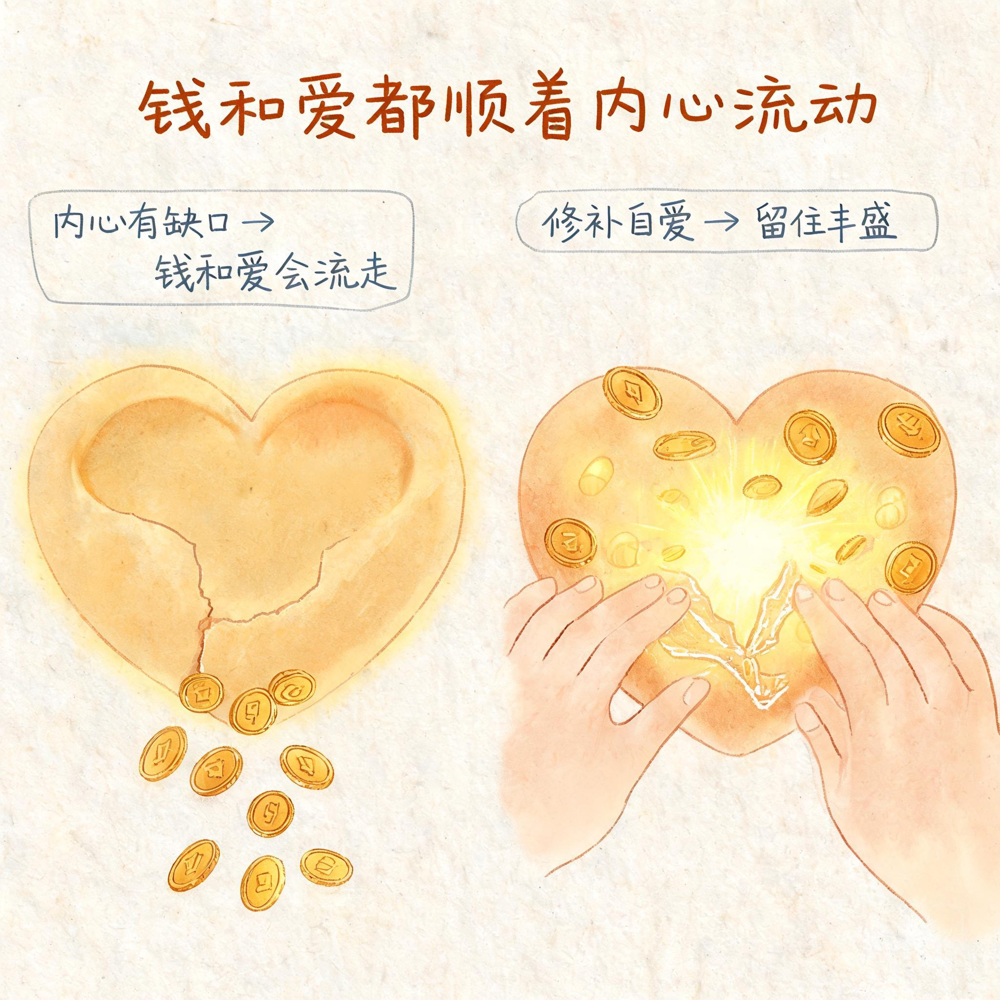
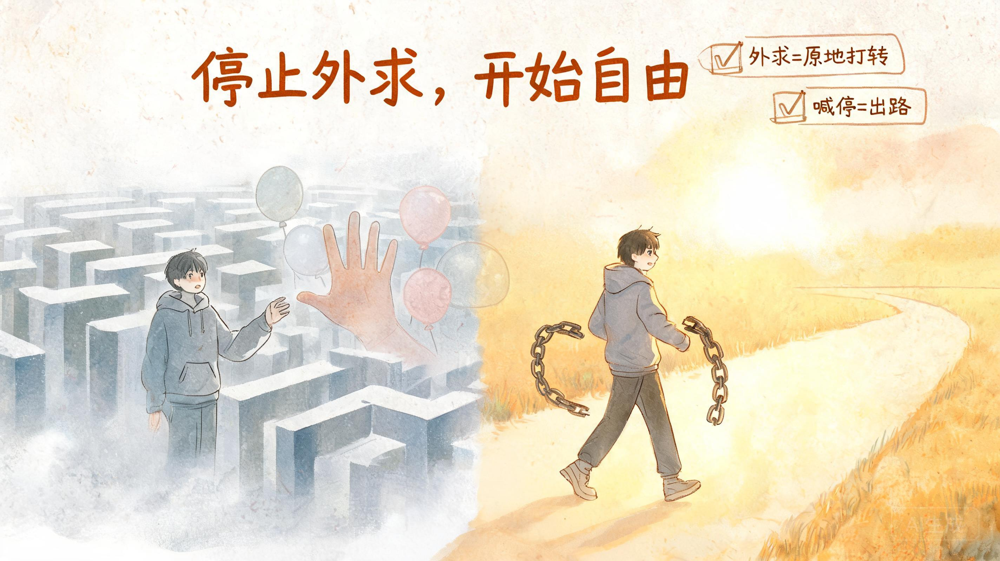

他人的爱是破铜烂铁，自己的爱才是珍宝

“他人的爱是破铜烂铁，他人的爱不算什么，彻底不屑于他人的爱，自己对自己的爱才是珍宝。”
这一章的核心是破除一个幻觉：以为别人的爱能填补自己内心的缺口。
▎为什么我们总觉得别人的爱很重要
一切的卡点是：太把别人的爱当回事，却不把自己对自己的爱当回事放第一。从小我们被教育要讨人喜欢、要获得认可，久而久之，就习惯了把“别人爱不爱我”当成自己的价值标尺。
但这篇文章说得很直接：任何人的爱都是不够、不可靠的。对任何人的爱都彻底不再希望、渴望和当回事，不是冷漠，而是看清了真相。
“喜欢自己比被别人喜欢和喜欢别人重要一万倍一亿倍。”
▎“彻底死心看淡感情”是什么意思
这不是让你不再相信感情，而是让你不再把感情当解药。彻底死心看淡感情是解，因为这个“死心”是根植于心的认知：任何人的爱都比不上自爱，不再渴求他人的，而是向内求。
任何人的爱都取代不了缺位的自爱，只有自己能真正填补。因为别人的都不够纯粹，休想用他人的爱来替补缺失的自爱。这是首重认知。
▎永远置顶自己对自己的爱
永远置顶自己对自己的爱的位置，永远把自爱排第一，人生首先要做的就是爱自己。这不是自私，而是清醒地知道：你是这世上爱你的第一人，其余的人都只会是第二爱你的人。
▎受伤的真正意义：对爱祛魅
爱的目的是通过受伤来让你看到：任何人的爱都不会超过自爱，从而让你对爱祛魅。受伤不是惩罚，而是提醒你停止爱别人、停止向别人索取爱。
别人那里没有，所以向外求爱永远求而不得。回头爱自己，就是向内求，形成自体良性循环。这是速效解药。
💬 场景：他不回消息时
旧模式：焦虑、猜测、反复看手机，觉得他是不是不爱我了。
新模式：他的爱不给我，我也不缺。我现在能为自己做什么？去洗澡、看书、做事。把力气收回来。
📝 本章要点
- 他人的爱不够纯粹、不稳定、不可靠，不值得太当回事。
- 任何人的爱都取代不了缺位的自爱，只有自己能真正填补。
- 受伤的意义是让你对爱祛魅，停止向外索取。
- 求财者风生水起，求被爱者一败涂地，自爱者财爱双收。
认知上彻底明白：向外求是没有用的

“向外求是没有用的。外面的都是虚的，都是泡沫。”
一旦看清了外求的本质，放弃外求就成了唯一理性的选择。
▎外求为什么无法满足你
外求来的永远无法得到真正满足。从外界抓东西不停地补，只会越补越空。因为任何人的都不会超过自己的。你抓来的关注、承诺、安全感，都是暂时的、不稳定的，填不满你内心真正的空缺。
➡️ 外求没用，彻底放弃外求。
➡️ 转而只极致内求。
▎内求，才是真正的满足
唯有一切向内求，才能得到真正的满足和安全感，和内心的平静，才能真正弥补内心的空缺。人只能向内求，只能靠自己。钱和爱也只能自己给自己。
“缺爱就爱自己，缺钱就赚钱。”
▎寄望于别人，只会停在原地
寄望于别人是没有意义的。我们永远不要把钱和爱寄希望在别人身上，因为你总寄望于别人，才会永远停留在原地。
外界没有你想抓取的东西，你想要的都在内里。当你不想抓取什么的时候，就会变得非常平静。向外求永远会感觉虚，向内求才能感觉到扎扎实实。
寄望于别人便会忘记寄望于自己；因为你总寄望于别人，不去学着自爱，才会一直缺爱。捡起自爱，无敌自爱是解药。
▎向外求的坏处
外求不只是“没用”，它还在主动消耗你。看清这些坏处，放弃外求才会成为毫不犹豫的选择。
- 浪费太多时间。你过去一直在向外求上浪费了太多时间。这个时间你都用来向内求，你现在不知道会成功和富足多少倍。
- 把爱理想化。缺爱的时候，人容易把爱情、别人的关注无限美化，以为那是解药。其实只是给匮乏披上一层幻想。
- 别人只是观众。当你意识到别人什么都给不了你，别人只是观众时，就彻底祛魅了。而祛魅会让你开始学会靠自己，感受到极大的高能量和拼搏的信心。
- 变强大从放弃外求开始。但凡你体验过一次向内求清清爽爽、干劲满满的好处，就只想向内求了。
🌟 放弃外求会神清气爽，信我所有内耗都会消失。彻底向内求会很爽、很有力量、很自由、干劲满满。
💬 场景：工作受挫时
旧模式：求同事认可、求领导安慰、发朋友圈求关注。
新模式：不向外抓认可。问自己：我哪里可以改进？我现在能为自己做什么？把力气收回到能力提升上。
📝 本章要点
- 外求来的永远无法真正满足，只会越补越空。
- 外界没有你想抓取的东西，你想要的都在内里。
- 人只能向内求，钱和爱也只能自己给自己。
- 寄望于别人，就会永远停留在原地。
行为上：向内扎根，爱自己方法论

“任何时候都一定把对爱的期许、被爱的需要、赚钱的责任，只完完全全放在自己身上。”
知道要向内求之后，更重要的是行为上怎么做。这里给了一套清晰的方法论。
▎你为什么每天那么累
你之所以每天没做什么就很累、能量低、能量外漏，感到内心匮乏空虚，是因为你正在一直不停地向外求、与外界纠缠，因此内耗。时间注意力过多投入外界，因此消耗能量。
向外抓取非常心累，向外求能量走低；向内求能量变高。而当感到内心空虚匮乏、能量很低时，本能会让你更加向外求，然而这会导致你内在更加匮乏空虚、更加缺爱。
清醒地意识到他人的总是不够不可靠的，加上意识到自爱才是珍宝，转而竭力向内求、向内扎根，才能彻底弥补空虚和匮乏。
▎捡起自爱：把责任放回自己身上
狠狠爱自己，唯有直到我们长出向内求、爱自己的能力，这种对爱的渴求和缺爱缺钱的匮乏状态才会彻底终止。
▎为什么“任何时候都一定”只向内求
因为向内求是“唯一可行的”“稳稳地”能够“真正”弥补缺爱缺钱的方式。而当你彻底地爱自己，就会彻底不屑于任何他者的爱。因为你已有了最真的。
《缺爱疯狂爱自己，缺钱疯狂做事疯狂赚钱》
这是非常重要的实操方法，能一秒走出内耗。
当很爱自己的时候，也就不再渴求别人的爱。当不再渴求别人爱时，就会整个人彻底放松下来，把自己还给自己。
▎向内求的好处
- 向内求放弃期待他人，会无比强大、无比自由、节省时间精力、无比有行动力、无比稳、瞬间平静、不再痛苦、能量聚焦。
- 向外求只有求而不得的痛苦，开始向内求会无敌爽、无敌稳、无敌强、无敌自由。
- 向内求得的每一个瞬间都会转化为内在的力量和丰盛。
- 向内求力量感的来源都是我自己，从内心能够获得力量，无敌自由、无敌有安全感。
- 向内求不会再被别人拿捏感情和情绪。
📝 本章要点
- 外求导致内耗和能量外漏，内求让能量回流。
- 把对爱、被爱、赚钱的责任完全放回自己身上。
- 实操方法：缺爱疯狂爱自己，缺钱疯狂做事赚钱。
- 向内求的好处：爽、稳、强、自由、丰盛。
关于自爱：你越自爱，越不缺爱

“钱会顺着内心缺爱、不自爱的缺口不断向外流失。”
▎钱和爱，为什么会一起流失
如果你想要不缺爱、留住钱、吸引钱，就要：任何时候都一定一定把对爱的期许、被爱的需要、赚钱的责任只完完全全放在自己身上，直到我们发展出彻底爱自己的能力，长出向内求的能力。这样就能不再渴求他人爱，也不再缺爱、不再缺钱。
▎老天为什么会“惩罚”不内求的人
老天会精准地惩罚每一个不自己爱自己的人，也就是每一个不向内求、总在向外求的人。这不是恶意的惩罚，而是提醒：原来我过去吃的苦都是因为我不爱自己（不向内求），又想从别人身上寻求爱（向外求）。
所有遭遇的痛苦是想让我看到没向内求的缺口，提醒我、倒逼我完成向内求的课题，长出向内求的能力。这是根源。
“你要是这世上爱你的第一人，其余的都只会是第二爱你的人。”
▎为什么越自爱越不缺爱
不是因为自爱就有人爱才不缺爱，而是因为你自己的就是最真的爱。向内求才能求到真的爱，当你向内求到了最真的，也就不愿再向外求那一星半点的了。
当你彻底爱自己，就会不屑于任何他者之爱。当你很爱自己的时候，就能降低对他人爱的渴求，从向外求的状态变成向内求的状态。
💬 场景：看到别人被爱时
旧模式：羡慕、自卑、觉得自己不被爱。
新模式：别人的爱是锦上添花，我自己才是锦缎。我给自己的爱，比任何人的都真。
📝 本章要点
- 内心缺爱不自爱，钱和爱都会顺着缺口流失。
- 痛苦是在提醒你完成向内求的课题。
- 你是这世上爱你的第一人。
- 越自爱越不缺爱，因为自己的爱最真。
为什么“任何时候都一定”只向内求？

为什么“任何时候都一定”把对爱的期许、被爱的需要、赚钱的责任“只完完全全”放在自己身上、只彻底向内求？
▎三个原因
你会变强
当你任何时候都把对爱的期许、被爱的需要只完完全全放在自己身上、向内求，你会自强自立、有掌控感，感受前所未有的强大、充满力量、自信、充满勇气，所向披靡、平静、无所吊谓他人。向内求是百益无一害的道路，是最爽最有力量的道路，是永恒正确的道路，是最终抵达的终点。
你会变满
当你任何时候都把对爱的期许、被爱的需要只完完全全放在自己身上、向内求时，你会感到内心无比满足、饱满充实，不再空洞匮乏。你感觉到自己产生能量和爱。且向内求才到求到真的，向内求是“唯一可行的”“稳稳的”能够“真正”弥补缺钱缺爱的道路。
匮乏会终止
只有这样任何时候都把对爱的期许、被爱的需要只完完全全放在自己身上、向内求，才能长出向内求的能力。而直到唯有我们长出向内求的能力，这种对爱的渴求和缺钱缺爱的匮乏状态才会彻底终止。
向外求没用。你过去一直在向外求上浪费了太多时间，你根本不需要浪费任何时间在无意义的向外求上。这个时间你都用来向内求，你现在不知道会成功和富足多少倍。这就是向内求的意义。
🌟 放弃外求会神清气爽，信我所有内耗都会消失。彻底向内求会很爽、很有力量、很自由、干劲满满。但凡你体验过一次向内求清清爽爽、干劲满满的好处之后，就只想向内求了。变强大是从放弃外求转向内求开始的。
📝 本章要点
- 向内求让你变强、变满、终止匮乏。
- 向内求是唯一可行、稳稳、真正能弥补缺爱缺钱的方式。
- 外求只是在浪费时间，内求才有复利。
- 体验过一次内求的爽，就只想向内求了。
你明白任何人的爱都不会超过你自己

你明白任何人的爱都不会超过你自己的从此，就会任何时候都把对爱的期许、被爱的需要、赚钱的责任只完完全全放在自己身上，只爱自己。
这是一个自然发生的过程。当你停止外求，把责任收回来，一切都会自动归位。
▎你会自然发生的变化
你自然会向内求、向内找寻支持和爱，自然会自己爱自己。你的破碎和缺爱、向外渴求爱和求而不得的痛苦自然都会消失，因为你不求了。
你自然不会再做不到自爱和向内求，自然会有“你爱不爱我我都无所谓”的心态，也就是不屑于任何他者之爱，降低对他人爱的渴求，从向外求变成向内求的状态。
你自然会努力工作、专心赚钱，让自己生活事业越过越好；自然会特别想出人头地。自然会不再脑子不清醒，搞事业一半跑去搞感情。自然会戾气消失。
你自然会深刻领悟向内求是唯一可行的、稳稳的、能够真正弥补缺钱缺爱的方式。你就会明白爱和被爱都毫无意义，唯有自爱最有意义。
你自然会想要实现自我价值。情关过了，你想要的就不再是爱和被爱，而是做出成绩、活出自己。事业和自我实现，会变成你新的兴奋点。
💡 你只是之前没有看明白这点
这些变化不是强迫自己做出来的，而是停止外求、开始自爱之后的自然结果。当一个人不再把力气伸出去，力气就会全部回流到自己身上。
向内求内心会饱满充实对应：
1️⃣ 唯有一切向内求才能得到真正满足；
2️⃣ 唯有发展出向内求的能力，对爱的渴求才会彻底终止。
详细版：过情关的三个落地心法
知道道理不够，关键是能在情绪上头、能量走低时真正落地。这三条心法，是把“停止外求，回到自己”从认知变成行动的具体抓手。
▎一、任何人的爱，都不该让你自断臂膀
看清任何人的爱都是“三瓜俩枣”、有局限、轻如鸿毛、随时可能收回。不要再因为谁爱不爱你、谁怎么看你，就内耗自己、疏忽事业、让自己不快乐。
你内里就有世间最纯粹的爱。对任何人的爱彻底祛魅，对自己的爱无限赋魅。任何人的爱都不用放在眼里，心里只有自己。
你缺的爱，只有你能给自己。先去赚钱，自己弥补缺失的爱。
▎二、放下原生家庭爱的遗憾
余生你可以自己爱自己。接受你永远无法得到你想要的那种父母之爱，放下对童年、对他人“三瓜俩枣”的爱的执念。
这不是冷漠，而是收回了那份永远等不到的期待。把“等别人来爱我”变成“我自己来爱自己”。
▎三、永远不要把钱和爱寄希望在别人身上
寄望于别人是没有意义的。因为你总寄望于别人，才会永远停留在原地。
任何时候都一定把对爱的期许、被爱的需要、赚钱的责任，只完完全全放在自己身上。缺爱就疯狂爱自己，缺钱就疯狂做事赚钱。
你放弃外求，不断不断地一直向内求，你一定会得到属于你的丰盛和幸福。🏃♀️